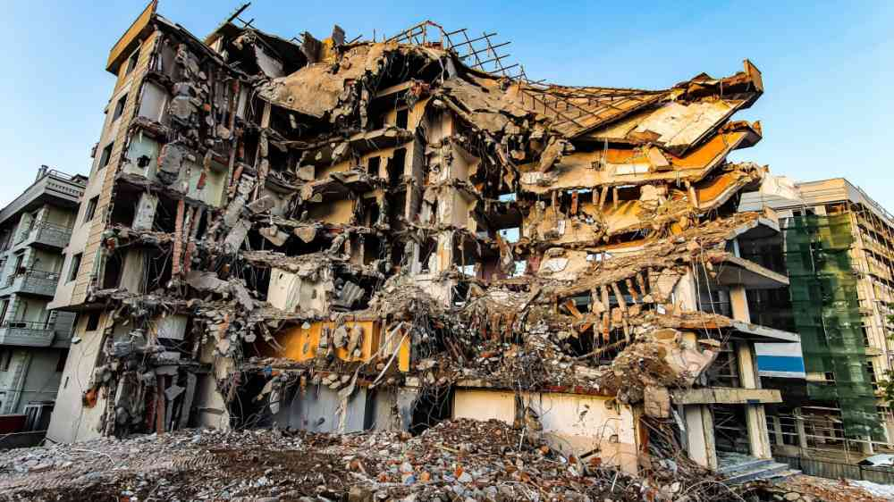
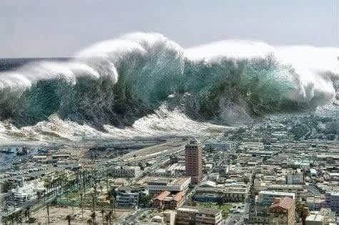
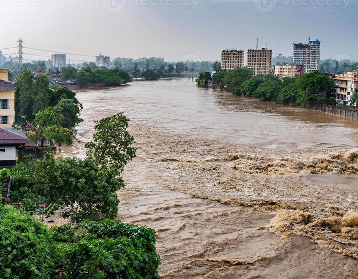
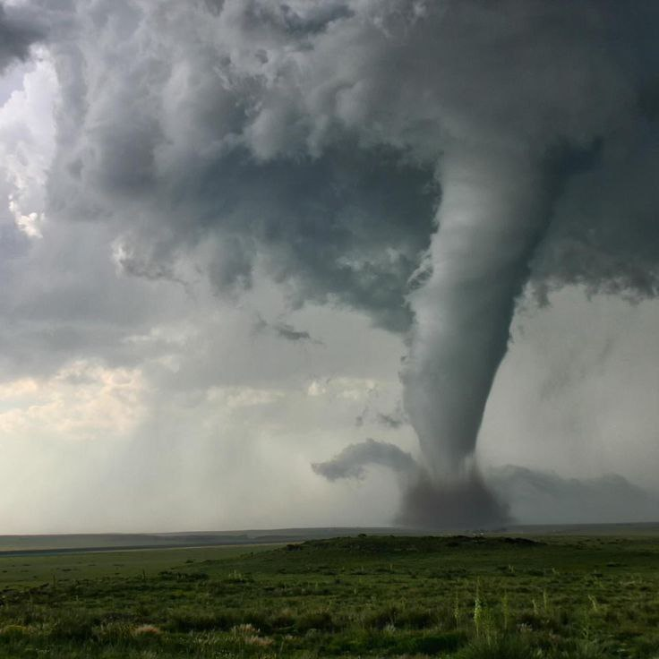
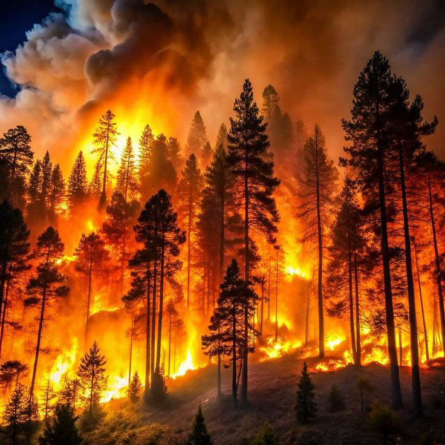
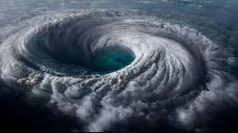

Earthquakes, floods, cyclones, and wildfires can strike without warning, causing devastating loss of life, property damage, and community disruption. Preparedness and awareness are your first line of defense when disasters occur.
Our platform empowers communities through education, preparation, and mutual support. Together, we can build resilience, reduce disaster impacts, and create safer environments for everyone.
Natural disasters are extreme environmental events that can develop suddenly or gradually, threatening human safety, infrastructure, and ecosystems. These powerful forces of nature include earthquakes, floods, cyclones, tsunamis, landslides, droughts, and wildfires.
Each disaster type presents unique risks and warning signs. Earthquakes strike without warning, while floods and cyclones often provide critical preparation time. Understanding these differences is essential for effective emergency response.
Disaster awareness transforms fear into action. By recognizing early warning signs and understanding risk factors, communities can implement safety plans, build resilient infrastructure, and respond effectively during emergencies.
This platform provides evidence-based information to help individuals and communities prepare, respond, and recover. When knowledge is shared and neighbors support each other, communities become stronger and more resilient against nature's challenges.
Understand different disaster types, their causes, warning signs, and protective measures you can take.

Sudden ground shaking caused by tectonic plate movements. Major earthquakes can collapse buildings, trigger tsunamis, and cause widespread infrastructure damage within seconds.
Learn More
Powerful ocean waves generated by underwater earthquakes, volcanic eruptions, or landslides. Tsunamis can travel across entire ocean basins and flood coastal communities with devastating force.
Learn More
Explosive release of magma, ash, and gases from Earth's interior. Eruptions can cause pyroclastic flows, lava damage, ashfall, and long-term climate impacts across regions.
Learn More
Overflow of water onto normally dry land from heavy rainfall, storm surges, or dam failures. Floods are the most common natural disaster worldwide, damaging property and contaminating water supplies.
Learn More
Violently rotating columns of air extending from thunderstorms to ground level. Tornadoes can reach wind speeds over 300 mph, destroying structures and creating deadly flying debris.
Learn More
Rapid downward movement of soil, rock, and debris on slopes. Often triggered by heavy rainfall, earthquakes, or human activity, landslides can bury communities and block critical transportation routes.
Learn More
Uncontrolled fires spreading rapidly through forests and grasslands. Intensified by climate change, wildfires create their own weather systems, generate ember storms, and threaten urban-wildland interfaces.
Learn More
Large rotating storm systems with sustained winds exceeding 74 mph. Cyclones (hurricanes/typhoons) bring catastrophic winds, storm surges, and torrential rainfall to coastal regions for days.
Learn MoreJoin our collective effort to build disaster-resilient communities. Login to access support functions.